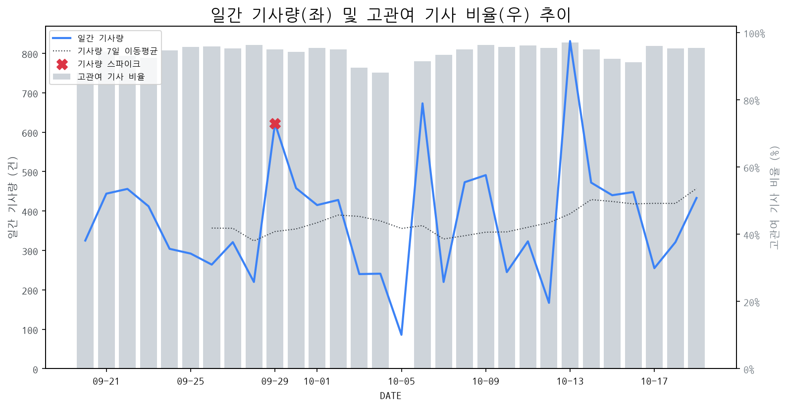

1
시장 활동 지표
기사량 추세 & 이상 징후 탐지
시장의 '전체 기사량'이 평소보다 비정상적으로 급증했는지(Spike)를 차트로 확인하고, LLM이 분석한 급등의 핵심 원인을 파악할 수 있음

고관여 기사란? 산업 연관 키워드로 수집된 기사들 중 디스플레이 키워드에 가중치를 반영하여 도출된 관련성 높은 기사
수집된 기사 수 (2026-10-19)
433
+159% WoW
기사량 변동 수준 (7일 이동평균 대비)
±6.7% 이하
2
오늘의 키워드
급격한 관심 ↑, 주목해야 할 키워드
1
oled
+4.2σ
애플의 OLED 맥북·아이패드 미니 출시 임박과 삼성의 비FMM OLED 경쟁 가세가 주요 요인입니다.
Related Metrics
금일 언급량: 27, 전일 대비: +19
Interpretation
OLED 수요 확대 기대
Next Step
핵심 토픽 'OLED_Topic' 관련 신호입니다. 3번 섹션(키워드 감성분석)에서 해당 토픽의 감성 변동을 교차 확인하세요.
2
맥북
+3.0σ
애플의 첫 OLED 맥북 출시 임박 소식에 관련 업계의 기대감이 고조되었습니다.
Related Metrics
금일 언급량: 9, 전일 대비: +7
Interpretation
IT OLED 시장 확대 기대
Next Step
'맥북' 관련 상세 기사 및 경쟁사 반응 모니터링
3
요가
+3.0σ
레노버가 AI 가속기 RTX 스파크를 탑재한 '요가 프로 9n' 노트북을 국내 출시하며 주목받았습니다.
Related Metrics
금일 언급량: 7, 전일 대비: +7
Interpretation
AI 노트북 수요 증가 신호
Next Step
'요가' 관련 상세 기사 및 경쟁사 반응 모니터링
4
레노버
+2.6σ
레노버가 RTX 스파크를 탑재한 AI 노트북 '요가 프로 9n'을 국내 출시하며 관심이 집중되었습니다.
Related Metrics
금일 언급량: 11, 전일 대비: +11
Interpretation
AI 노트북 수요 증가 시사
Next Step
핵심 토픽 'IT_OLED_Topic' 관련 신호입니다. 3번 섹션(키워드 감성분석)에서 해당 토픽의 감성 변동을 교차 확인하세요.
3
실시간 Risk 키워드
경계해야 할 시그널 탐지
특정 토픽의 부정 감성 점수가 급등할 때 이를 즉시 탐지하고, "근거 기사" 링크를 통해 리스크의 실체를 빠르게 파악할 수 있음
키워드 분석 결과, 오늘은 걱정할 만한 하락 신호가 없습니다. (부정 언급량 변화: +1.5σ 이내)
4
주요 이벤트 모니터링
실시간 산업 동향 파악을 위한 주요 활동
최근 발생한 주요 기업들의 신제품 출시, 투자 등 주요 이벤트를 제공하여 매일 경쟁사 동향을 확인할 수 있음
애플이 첫 OLED 맥북과 아이패드 미니 출시를 앞두고 있으며, 이는 국내 디스플레이 산업에 긍정적인 영향을 줄 것으로 예상된다. 이번 신제품 출시는 OLED 기술 채택 확대를 통해 관련 시장의 성장을 견인할 전망이다.
Impact
이번 애플의 OLED 신제품 출시는 프리미엄 IT 기기 시장에서의 OLED 채택률을 높이고, 특히 한국 디스플레이 제조사들의 OLED 시장 점유율 확대 및 기술 리더십 강화에 기여할 것으로 예상된다.
Next Step
디스플레이 제조 기업은 애플의 신제품 출시에 맞춰 안정적인 OLED 패널 공급망을 확보하고, 차세대 디스플레이 기술 개발 및 생산 능력 확대를 통해 시장 경쟁 우위를 유지해야 한다.
애플이 28일 신제품 행사를 개최하며, 업계는 터치스크린 기능이 탑재된 맥북 출시 가능성에 주목하고 있습니다. 이는 맥북 라인업에 새로운 폼팩터와 사용자 경험 변화를 예고하는 이벤트입니다.
Impact
터치스크린 맥북의 출시는 노트북 디스플레이 시장에서 터치 기술 채택률을 높이고, 관련 패널 제조사 및 기술 개발에 대한 수요를 증가시킬 수 있습니다.
Next Step
디스플레이 제조 기업은 애플의 터치스크린 맥북 출시 동향을 면밀히 모니터링하며, 고품질 터치 기술과 효율적인 생산 능력 확보를 위한 전략을 수립해야 합니다.
기존 OLED 제조의 핵심 공정이었던 FMM(Fine Metal Mask) 방식이 FMM-less 방식으로 전환될 가능성이 높아지며, 이는 OLED 패널 생산 비용 절감 및 수율 향상에 기여할 것으로 예상됩니다. 이 기술은 OLED 디스플레이의 대중화를 앞당길 핵심 퍼즐로 작용할 것입니다.
Impact
FMM-less 기술의 상용화는 OLED 패널의 가격 경쟁력을 크게 향상시켜 스마트폰, TV를 넘어 차량용 디스플레이, 폴더블 기기 등 적용 범위를 확대하고 관련 시장 성장을 가속화할 것입니다.
Next Step
FMM-less 기술 개발 동향을 면밀히 모니터링하고, 자체 기술 확보 또는 파트너십을 통해 해당 기술 도입을 적극적으로 검토하여 미래 디스플레이 시장 경쟁 우위를 확보해야 합니다.
이번 주 증권 시장에 6개의 기업이 공모주 청약을 앞두고 있으며, 평균 경쟁률이 653대 1에 달할 정도로 높은 관심을 받고 있습니다. 이는 신규 자본의 시장 유입을 예고합니다.
Impact
이러한 대규모 IPO는 디스플레이 관련 신규 기술 투자나 생산 설비 확장에 대한 잠재적 자금 조달 기회를 확대하며, 시장 경쟁 구도에 변화를 가져올 수 있습니다.
Next Step
디스플레이 제조 기업은 IPO를 통해 조달될 자금이 향후 경쟁사에 어떤 기술 발전이나 시장 확대로 이어질지 면밀히 모니터링하며 대응 전략을 수립해야 합니다.
메리츠증권은 아이폰 듀오의 사전예약이 성공적으로 진행됨에 따라, 관련 폴더블 부품의 추가 발주가 기대된다고 분석했습니다. 이는 디스플레이 시장에 긍정적인 신호로 작용할 전망입니다.
Impact
이번 사전예약 흥행은 폴더블 디스플레이 시장의 성장 가능성을 재확인시켜주며, 관련 부품 공급업체들에게는 생산량 증대 및 매출 확대로 이어질 수 있는 기회를 제공할 것입니다.
Next Step
디스플레이 제조 기업은 아이폰 듀오의 판매 추이를 면밀히 모니터링하고, 예상되는 폴더블 부품 수요 증가에 대비하여 생산 능력을 탄력적으로 확보하는 방안을 검토해야 합니다.